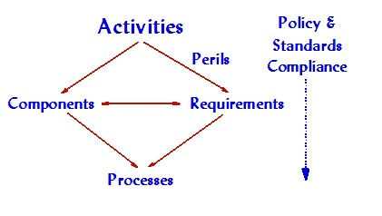
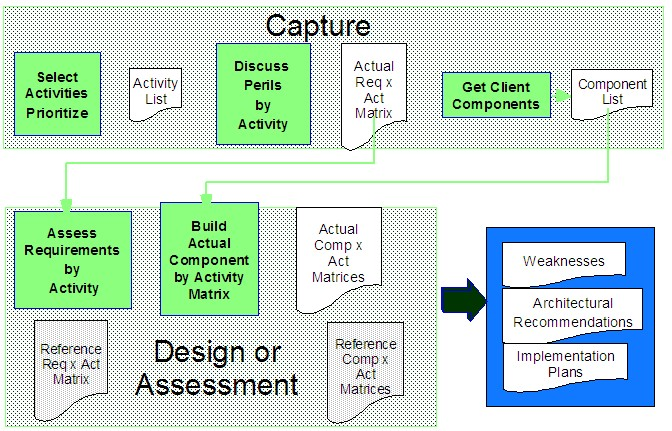

The Security Architecture work product will help an organization integrate security into any solution from the start,
minimizing risks and potential effects. The methodology will help an organization:
-
Understand the types of threats they might face,
-
Identify the resulting security requirements that are consistent with the organization’s policies and
standards,
-
Document the technology and process components the solution will need to implement to meet these requirements,
and
-
Develop plans to implement the secure solution or security solution.
Below are pictorial representations of the process.


The development of the Security Architecture work product includes the following steps:
-
Review the client’s solution objectives to list of the types of business activities the organization plans to
implement related to the solution.
-
Categorize each business activity into a smaller, finite set of pre-defined activities that have common
security and privacy requirements.
-
Review client’s existing security and privacy policies and standards with respect to the new set of activities
to be implemented by the solution.
-
Map the security process and technology services the organization requires against each activity based on
client’s existing processes, technology, policies and standards.
-
Document a customized Security Architecture that describes the organization’s solution objectives, its security
technology and process requirements, recommended policy and standards changes, the solution’s functional
architecture including diagrams and information flows, the solution’s component architecture detailing the
function and roles of each security component in the solution against the requirements, and an estimate of the
tasks, schedule, skills and resources required to implement and deploy the security components of the solution.
|